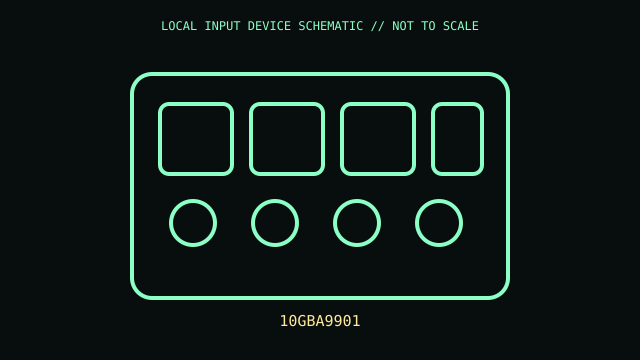

[ SPECIALIZED INPUT CONTROLLERS // IDENTIFIED COMPONENT ]
Elgato Stream Deck MK.2
USB macro keypad with 15 individually addressable LCD keys for software-defined actions.

MODEL IDENTIFICATION: 10GBA9901. Confirm the printed SKU, revision, bundle, region, and supplied accessories before repair or compatibility claims.
Model specifications
| Catalog leaf | Specialized input controllers |
|---|---|
| Exact model / identifier | 10GBA9901 |
| Physical mechanism and primary specifications | 15 LCD keys; USB-C wired connection; detachable stand and faceplate; per-key icon/action assignment through Stream Deck software. |
| Compatibility and interface caveats | Requires Stream Deck app/plugins and supported host OS; app actions depend on installed software. This is MK.2, distinct from original Stream Deck and Stream Deck +. |
| Revision identification | Record complete product label, revision, region, and accessories. Similar family names may differ in protocol, connector, feature set, and host requirements. |
Preservation and service
Export profiles for preservation; avoid pressure on LCD key caps, retain stand/faceplate and disconnect cable before cleaning.
Record observed condition, accessories, host OS, driver/app version, and test conditions separately from vendor specifications.
Primary manufacturer sources
- Elgato Stream Deck MK.2 productManufacturer documentation; verify exact PID and regional/revision markings against the physical unit.
- Elgato Stream Deck supportManufacturer documentation; verify exact PID and regional/revision markings against the physical unit.
Retain the applicable manual with the equipment record; manufacturer support pages and software availability may change.